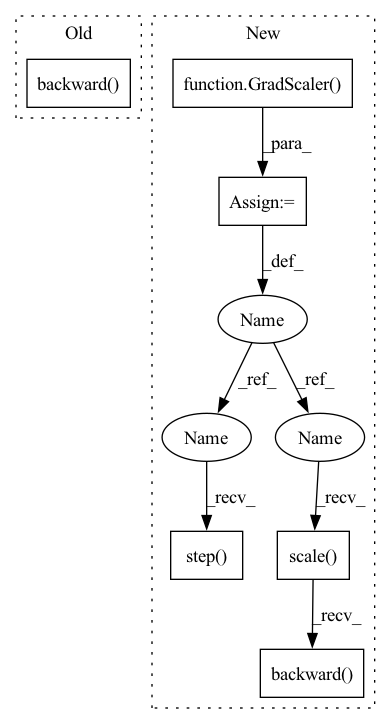

Pattern ID :33722

Before Change
step=step_counter)
train_losses_this_epoch.append(float(train_loss))
optimizer.zero_grad()
train_loss.backward()
step_counter += 1
torch.nn.utils.clip_grad_norm_(net.parameters(), 1.0)
optimizer.step()
net.eval()
After Change
if fine_tune:
lr = lr * 0.01
optimizer = torch.optim.Adam(net.parameters(), lr=lr, eps=1.0e-06, weight_decay=0.0)
scaler = GradScaler()
if path_to_checkpoint is not None:
check_dict = torch.load(os.path.join(path_to_checkpoint), map_location=device)
net.load_state_dict(check_dict["model"])
if not fine_tune:
optimizer.load_state_dict(check_dict["optimizer"])
step_counter = check_dict["step_counter"]
scaler.load_state_dict(check_dict["scaler"])
start_time = time.time()
while True:
epoch += 1
optimizer.zero_grad()
train_losses_this_epoch = list()
for batch in tqdm(train_loader):
with autocast():
if not use_speaker_embedding:
train_loss = net(text=batch[0].to(device),
text_lengths=batch[1].to(device),
speech=batch[2].to(device),
speech_lengths=batch[3].to(device),
speaker_embeddings=None,
step=step_counter)
else:
train_loss = net(text=batch[0].to(device),
text_lengths=batch[1].to(device),
speech=batch[2].to(device),
speech_lengths=batch[3].to(device),
speaker_embeddings=batch[4].to(device),
step=step_counter)
train_losses_this_epoch.append(float(train_loss))
optimizer.zero_grad()
scaler.scale(train_loss).backward()
step_counter += 1
torch.nn.utils.clip_grad_norm_(net.parameters(), 1.0)
scaler.step(optimizer)
scaler.update()
net.eval()
if epoch % epochs_per_save == 0:
torch.save({
In pattern: SUPERPATTERN
Frequency: 3
Non-data size: 6
Instances
Fragment ID: 96984227
Project Name: digitalphonetics/ims-toucan
Commit Name: e9c35c3e23fe145b416021cbe50f93424e2af282
Time: 2021-09-04
Author: florian.lux@ims.uni-stuttgart.de
File Name: TrainingInterfaces/Text_to_Spectrogram/Tacotron2/tacotron2_train_loop.py
M Class Name: AnonimousClass
N Class Name: AnonimousClass
M Method Name: train_loop(12)
N Method Name: train_loop(12)
M Parent Class:
N Parent Class:
M File Name: TrainingInterfaces/Text_to_Spectrogram/Tacotron2/tacotron2_train_loop.py
N File Name: TrainingInterfaces/Text_to_Spectrogram/Tacotron2/tacotron2_train_loop.py
M Start Line: 122
M End Line: 154
N Start Line: 124
N End Line: 166
'>
Before Change
emb_text_tensor = torch.tensor(emb_text[0]).to(device)
optimizer.zero_grad()
loss = diffusion_prior(text_embed = emb_text_tensor,image_embed = emb_images_tensor)
loss.backward()
// Samples per second
step+=1
samples_per_sec = batch_size*step/(time.time()-t)
// Save checkpoint every save_interval minutes
After Change
os.makedirs(save_path)
////// Training code //////
scaler = GradScaler(enabled=amp)
optimizer = get_optimizer(diffusion_prior.net.parameters(), wd=weight_decay, lr=learning_rate)
epochs = num_epochs
step = 0
t = time.time()
train_set_size = int(train_percent*num_data_points)
val_set_size = int(val_percent*num_data_points)
for _ in range(epochs):
diffusion_prior.train()
for emb_images,emb_text in zip(image_reader(batch_size=batch_size, start=0, end=train_set_size),
text_reader(batch_size=batch_size, start=0, end=train_set_size)):
emb_images_tensor = torch.tensor(emb_images[0]).to(device)
emb_text_tensor = torch.tensor(emb_text[0]).to(device)
with autocast(enabled=amp):
loss = diffusion_prior(text_embed = emb_text_tensor,image_embed = emb_images_tensor)
scaler.scale(loss).backward()
// Samples per second
step+=1
samples_per_sec = batch_size*step/(time.time()-t)
// Save checkpoint every save_interval minutes
if(int(time.time()-t) >= 60*save_interval):
t = time.time()
save_model(
save_path,
dict(model=diffusion_prior.state_dict(), optimizer=optimizer.state_dict(), scaler=scaler.state_dict()))
// Log to wandb
wandb.log({"Training loss": loss.item(),
"Steps": step,
"Samples per second": samples_per_sec})
scaler.unscale_(optimizer)
nn.init.clip_grad_norm_(diffusion_prior.parameters(), max_grad_norm)
scaler.step(optimizer)
scaler.update()
optimizer.zero_grad()
////// Evaluate model(validation run) //////
'>
Fragment ID: 96984226
Project Name: lucidrains/dalle2-pytorch
Commit Name: 7ee0ecc388b081a37d6ded5ac7426c58fce77c5b
Time: 2022-05-02
Author: lucidrains@gmail.com
File Name: train_diffusion_prior.py
M Class Name: AnonimousClass
N Class Name: AnonimousClass
M Method Name: train(23)
N Method Name: train(22)
M Parent Class:
N Parent Class:
M File Name: train_diffusion_prior.py
N File Name: train_diffusion_prior.py
M Start Line: 95
M End Line: 127
N Start Line: 66
N End Line: 139
'>
Before Change
speaker_embeddings=batch[7].to(device))
train_losses_this_epoch.append(float(train_loss))
optimizer.zero_grad()
train_loss.backward()
step_counter += 1
torch.nn.utils.clip_grad_norm_(net.parameters(), 1.0)
optimizer.step()
scheduler.step()
After Change
lr = lr * 0.01
optimizer = torch.optim.Adam(net.parameters(), lr=lr)
scheduler = WarmupScheduler(optimizer, warmup_steps=warmup_steps)
scaler = GradScaler()
epoch = 0
if path_to_checkpoint is not None:
check_dict = torch.load(path_to_checkpoint, map_location=device)
net.load_state_dict(check_dict["model"])
if not fine_tune:
optimizer.load_state_dict(check_dict["optimizer"])
scheduler.load_state_dict(check_dict["scheduler"])
step_counter = check_dict["step_counter"]
scaler.load_state_dict(check_dict["scaler"])
start_time = time.time()
while True:
epoch += 1
optimizer.zero_grad()
train_losses_this_epoch = list()
for batch in tqdm(train_loader):
with autocast():
if not use_speaker_embedding:
train_loss = net(text_tensors=batch[0].to(device),
text_lengths=batch[1].to(device),
gold_speech=batch[2].to(device),
speech_lengths=batch[3].to(device),
gold_durations=batch[4].to(device),
gold_pitch=batch[5].to(device),
gold_energy=batch[6].to(device))
else:
train_loss = net(text_tensors=batch[0].to(device),
text_lengths=batch[1].to(device),
gold_speech=batch[2].to(device),
speech_lengths=batch[3].to(device),
gold_durations=batch[4].to(device),
gold_pitch=batch[5].to(device),
gold_energy=batch[6].to(device),
speaker_embeddings=batch[7].to(device))
train_losses_this_epoch.append(float(train_loss))
optimizer.zero_grad()
scaler.scale(train_loss).backward()
step_counter += 1
torch.nn.utils.clip_grad_norm_(net.parameters(), 1.0)
scaler.step(optimizer)
scaler.update()
scheduler.step()
net.eval()
if epoch % epochs_per_save == 0:
'>
Fragment ID: 96984225
Project Name: digitalphonetics/ims-toucan
Commit Name: e9c35c3e23fe145b416021cbe50f93424e2af282
Time: 2021-09-04
Author: florian.lux@ims.uni-stuttgart.de
File Name: TrainingInterfaces/Text_to_Spectrogram/FastSpeech2/fastspeech2_train_loop.py
M Class Name: AnonimousClass
N Class Name: AnonimousClass
M Method Name: train_loop(13)
N Method Name: train_loop(13)
M Parent Class:
N Parent Class:
M File Name: TrainingInterfaces/Text_to_Spectrogram/FastSpeech2/fastspeech2_train_loop.py
N File Name: TrainingInterfaces/Text_to_Spectrogram/FastSpeech2/fastspeech2_train_loop.py
M Start Line: 151
M End Line: 189
N Start Line: 153
N End Line: 203